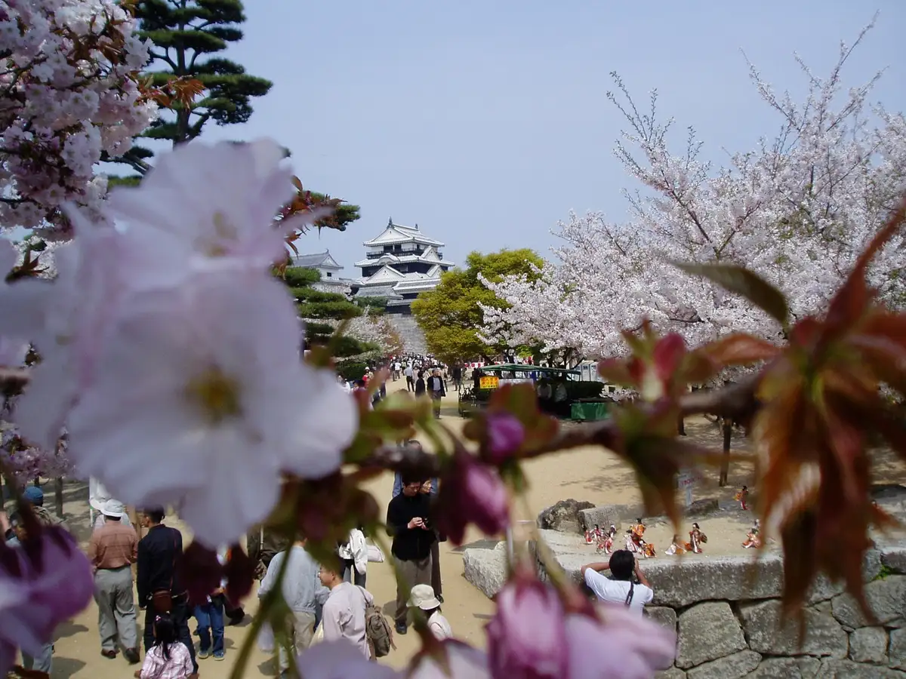
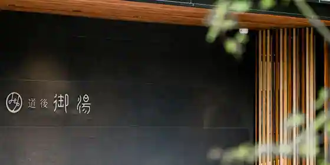
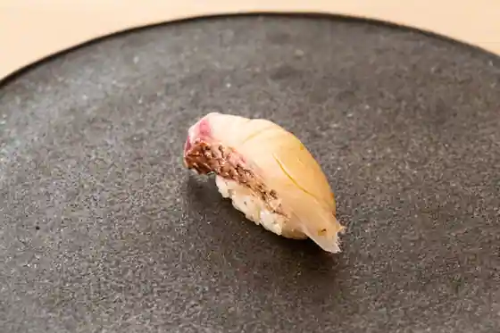
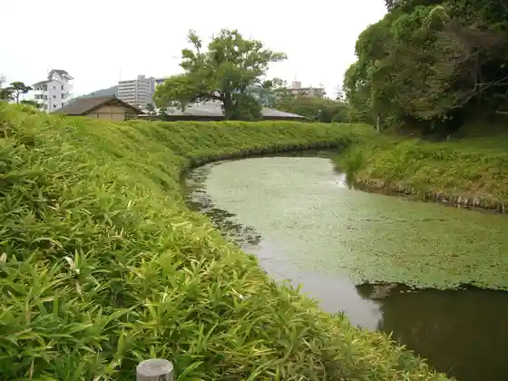
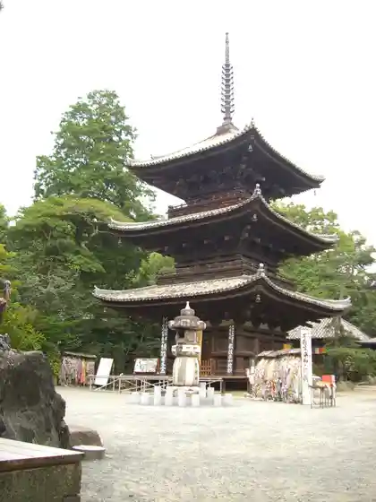

Japan / Ehime / Matsuyama
Matsuyama · Ehime
Matsuyama
Highlighted on the Ehime map.

Matsuyama City Hall · Tourism site




Sights · Things to do · Places to eat · Places to stay · Day-to-day services
Nearby in Ehime: ← Matsuno · Niihama →
Other towns: Ainan · Ikata · Imabari · Iyo · Kamijima · Kihoku · Kumakogen · Masaki · Matsuno · Niihama · Ozu · Saijo · Seiyo · Shikokuchuo · Tobe · Toon · Uchiko · Uwajima · Yawatahama
All towns in Ehime · Back to all prefectures